Klapp-Spukhaus zu Halloween – Bastelvorlage mit Schreibanlass und Wortspeicher, 3-fach differenziert (Klasse 3/4)

Ramadan und Zuckerfest – Lesespurgeschichte mit Rätselaufgaben (Klasse 4)

Elisabeth von Thüringen – Brot, Rosen, Nächstenliebe – Lesespurgeschichte mit Rätselaufgaben (Klasse 4)

Gotteshäuser der Weltreligionen – Lesespurgeschichte mit Rätselaufgaben (Klasse 4)

Wichtel beschreiben: Schreibanlass mit 4 Wichtelbildern, Wortspeicher und Checkliste (Klasse 3–4)

Klammerkarten: Dinosaurier – Klammerkarten – Klasse 1–4
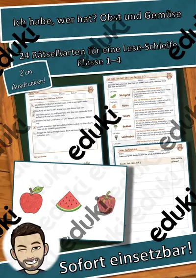
Ich habe, wer hat? Obst und Gemüse – Lese-Schleifen – Klasse 1–4
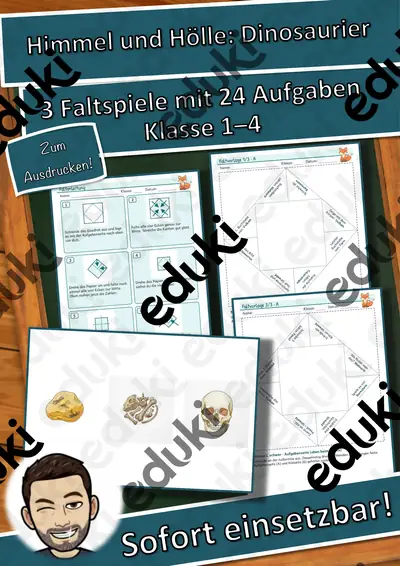
Himmel und Hölle: Dinosaurier – Himmel und Hölle – Klasse 1–4
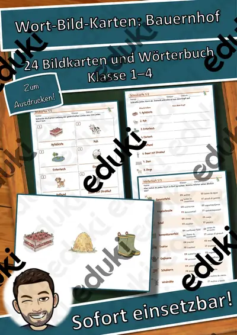
Wort-Bild-Karten: Bauernhof – Wort-Bild-Karten – Klasse 1–4
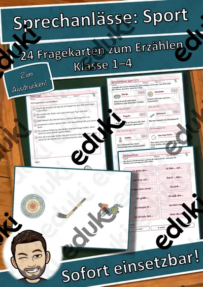
Sprechanlässe: Sport – Sprechanlässe – Klasse 1–4
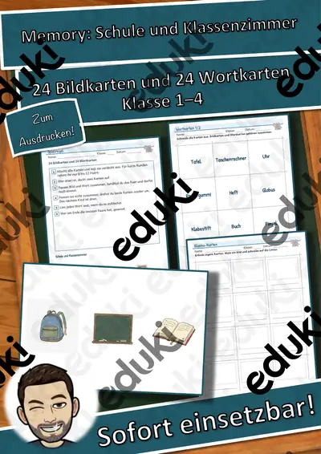
Memory: Schule und Klassenzimmer – Bild-Wort-Spiele – Klasse 1–4

Wortspiele: Sag es nicht! Sommer – Klasse 2–4
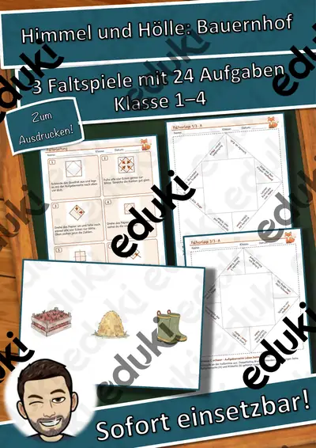
Himmel und Hölle: Bauernhof – Himmel und Hölle – Klasse 1–4
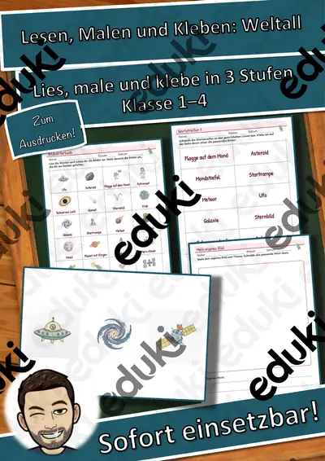
Lesen, Malen und Kleben: Weltall – Lesen und Malen – Klasse 1–4
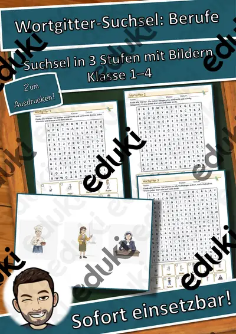
Wortgitter-Suchsel: Berufe – Wortgitter – Klasse 1–4

Lesen, Malen und Kleben: Ritter und Burg – Lesen und Malen – Klasse 1–4
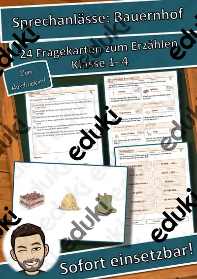
Sprechanlässe: Bauernhof – Sprechanlässe – Klasse 1–4
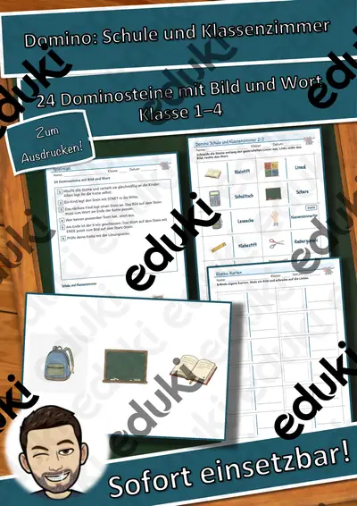
Domino: Schule und Klassenzimmer – Bild-Wort-Spiele – Klasse 1–4
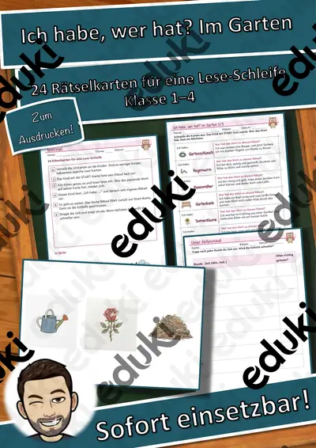
Ich habe, wer hat? Im Garten – Lese-Schleifen – Klasse 1–4

Wortspiele: Sag es nicht! Im Restaurant – Klasse 2–4
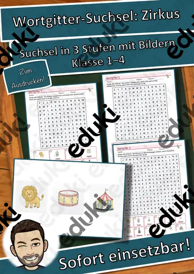
Wortgitter-Suchsel: Zirkus – Wortgitter – Klasse 1–4
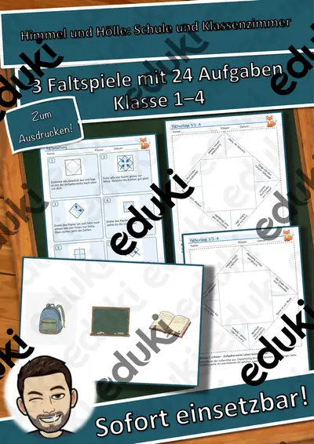
Himmel und Hölle: Schule und Klassenzimmer – Himmel und Hölle – Klasse 1–4
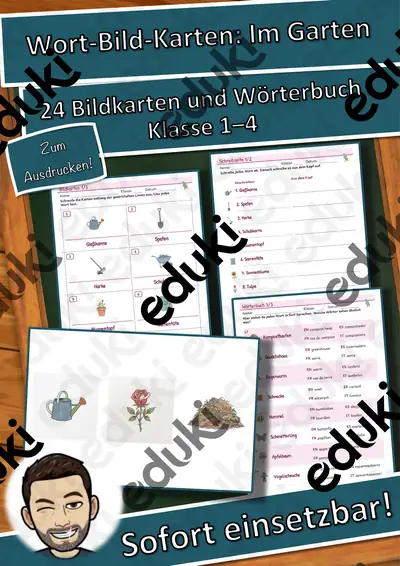
Wort-Bild-Karten: Im Garten – Wort-Bild-Karten – Klasse 1–4
Lesen, Malen und Kleben: Piraten – Lesen und Malen – Klasse 1–4
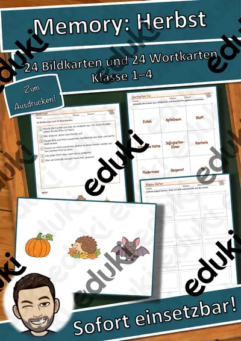
Memory: Herbst – Bild-Wort-Spiele – Klasse 1–4
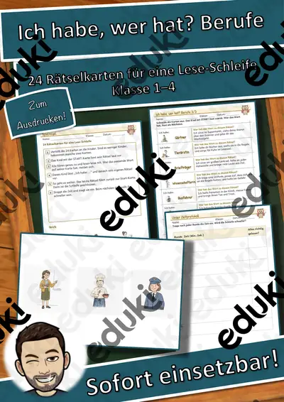
Ich habe, wer hat? Berufe – Lese-Schleifen – Klasse 1–4

Wortspiele: Sag es nicht! Kochen und Backen – Klasse 2–4
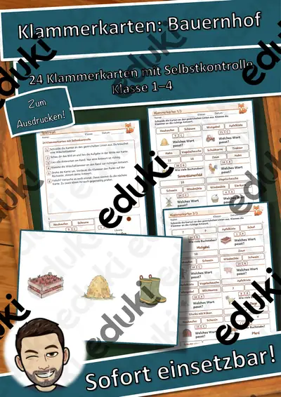
Klammerkarten: Bauernhof – Klammerkarten – Klasse 1–4
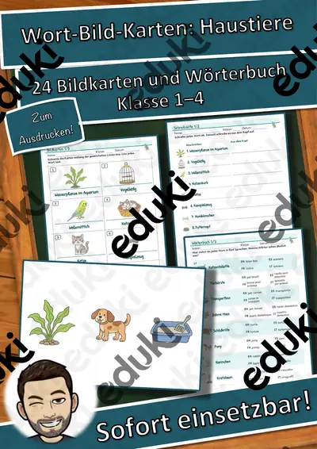
Wort-Bild-Karten: Haustiere – Wort-Bild-Karten – Klasse 1–4
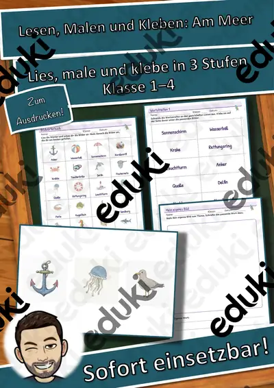
Lesen, Malen und Kleben: Am Meer – Lesen und Malen – Klasse 1–4
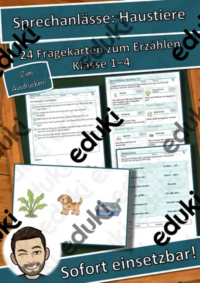
Sprechanlässe: Haustiere – Sprechanlässe – Klasse 1–4
Domino: Herbst – Bild-Wort-Spiele – Klasse 1–4
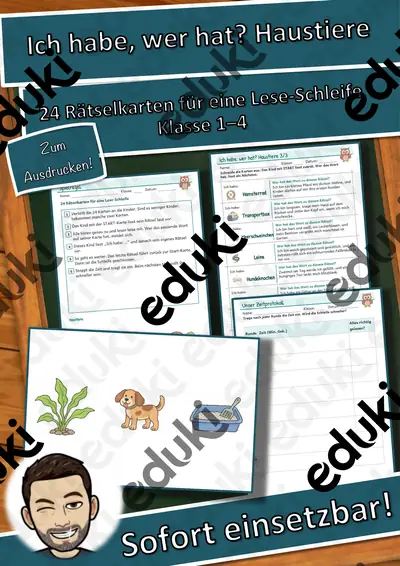
Ich habe, wer hat? Haustiere – Lese-Schleifen – Klasse 1–4

Wortspiele: Sag es nicht! Obst und Gemüse – Klasse 2–4
Wortgitter-Suchsel: Schule und Klassenzimmer – Wortgitter – Klasse 1–4
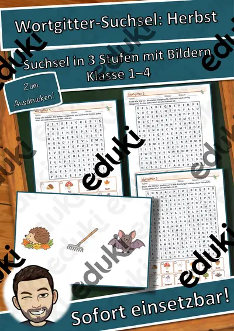
Wortgitter-Suchsel: Herbst – Wortgitter – Klasse 1–4
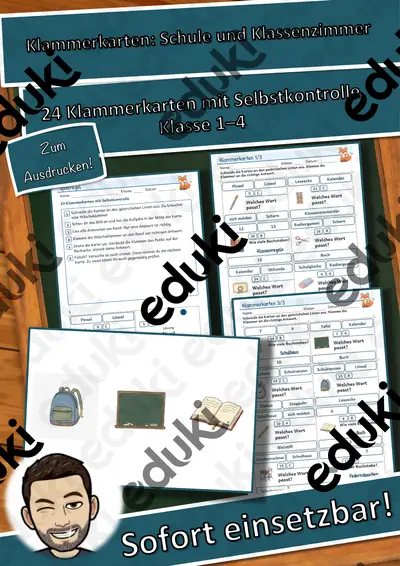
Klammerkarten: Schule und Klassenzimmer – Klammerkarten – Klasse 1–4
Wort-Bild-Karten: Zirkus – Wort-Bild-Karten – Klasse 1–4
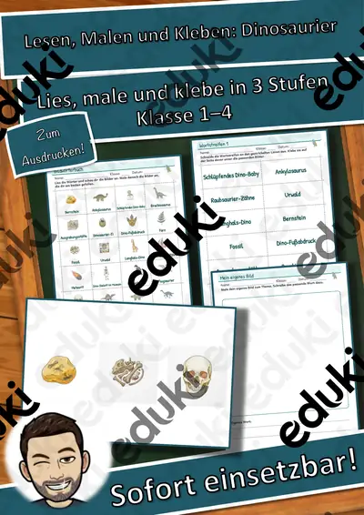
Lesen, Malen und Kleben: Dinosaurier – Lesen und Malen – Klasse 1–4
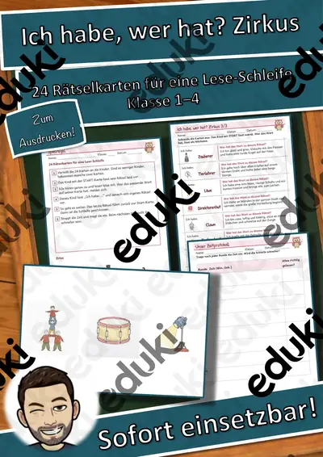
Ich habe, wer hat? Zirkus – Lese-Schleifen – Klasse 1–4

Wortspiele: Sag es nicht! Im Garten – Klasse 2–4
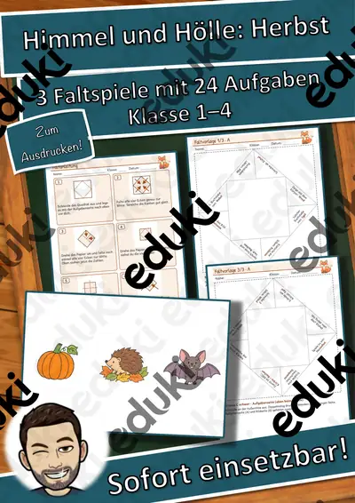
Himmel und Hölle: Herbst – Himmel und Hölle – Klasse 1–4
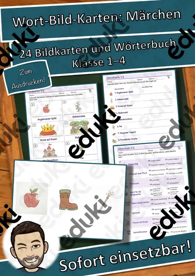
Wort-Bild-Karten: Märchen – Wort-Bild-Karten – Klasse 1–4
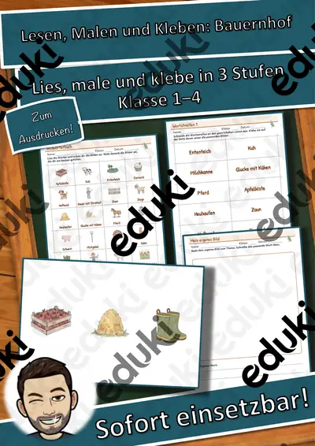
Lesen, Malen und Kleben: Bauernhof – Lesen und Malen – Klasse 1–4
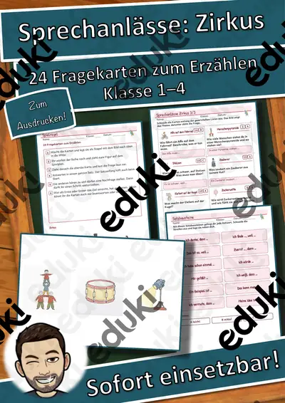
Sprechanlässe: Zirkus – Sprechanlässe – Klasse 1–4
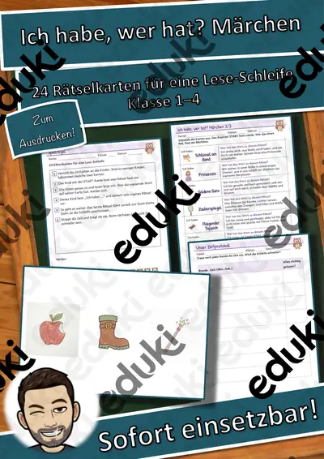
Ich habe, wer hat? Märchen – Lese-Schleifen – Klasse 1–4
Klammerkarten: Herbst – Klammerkarten – Klasse 1–4
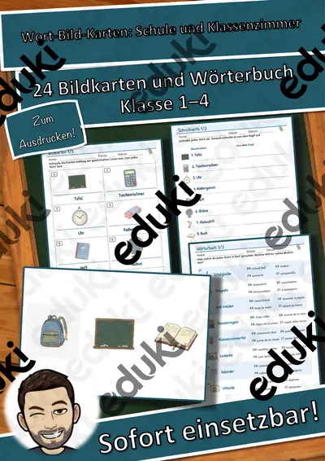
Wort-Bild-Karten: Schule und Klassenzimmer – Wort-Bild-Karten – Klasse 1–4
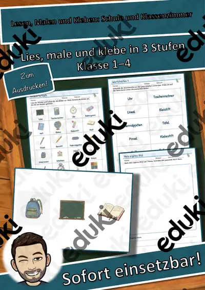
Lesen, Malen und Kleben: Schule und Klassenzimmer – Lesen und Malen – Klasse 1–4
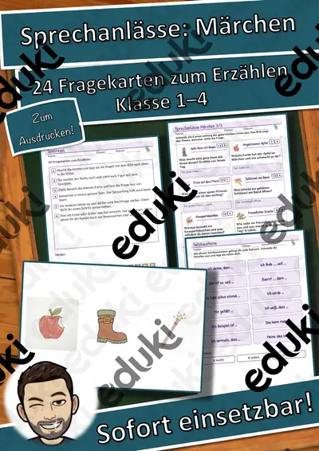
Sprechanlässe: Märchen – Sprechanlässe – Klasse 1–4
Ich habe, wer hat? Schule und Klassenzimmer – Lese-Schleifen – Klasse 1–4
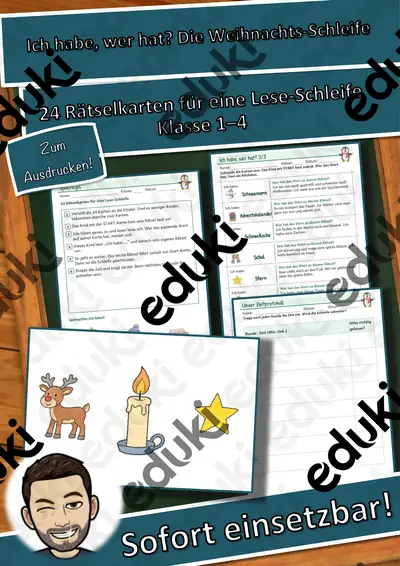
Winterzeit-Spiele: Ich habe, wer hat? Die Weihnachts-Schleife – Klasse 1–4
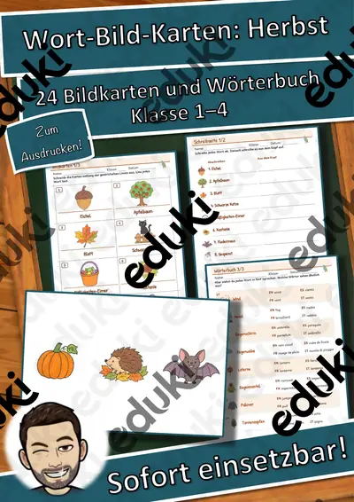
Wort-Bild-Karten: Herbst – Wort-Bild-Karten – Klasse 1–4
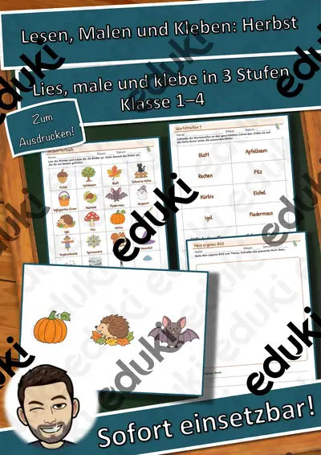
Lesen, Malen und Kleben: Herbst – Lesen und Malen – Klasse 1–4
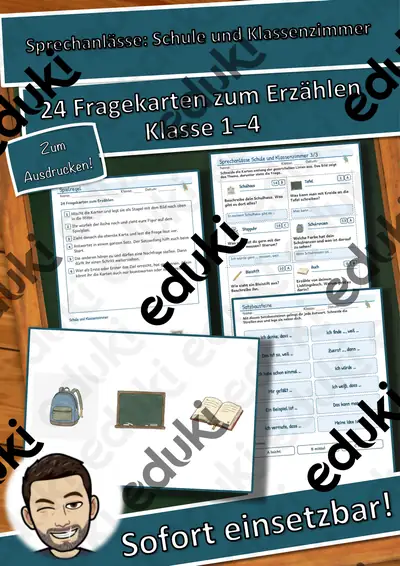
Sprechanlässe: Schule und Klassenzimmer – Sprechanlässe – Klasse 1–4
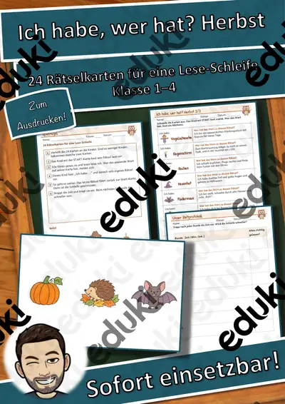
Ich habe, wer hat? Herbst – Lese-Schleifen – Klasse 1–4

Wortspiele: Sag es nicht! Haustiere – Klasse 2–4

Wortspiele: Sag es nicht! Zirkus – Klasse 2–4

Wortspiele: Sag es nicht! Märchen – Klasse 2–4
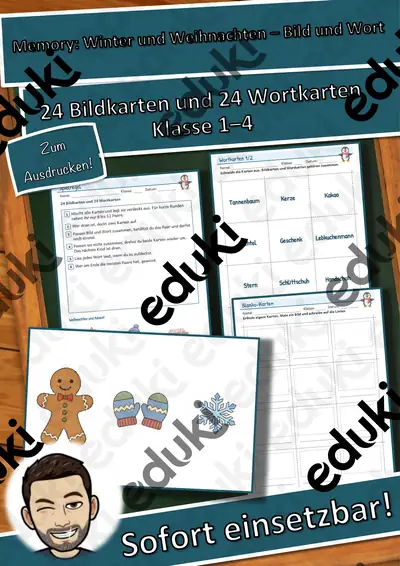
Winterzeit-Spiele: Memory: Winter und Weihnachten – Bild und Wort – Klasse 1–4
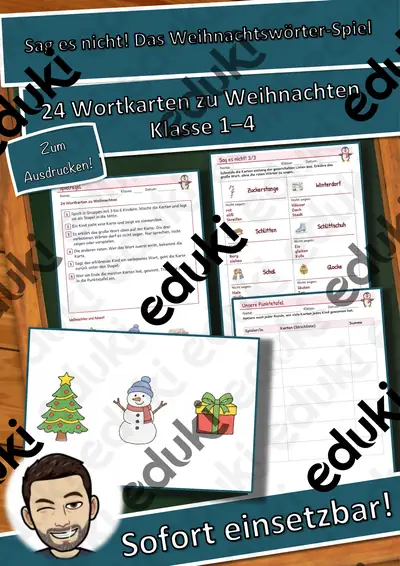
Winterzeit-Spiele: Sag es nicht! Das Weihnachtswörter-Spiel – Klasse 1–4

Wortspiele: Sag es nicht! Sport – Klasse 2–4

Wortspiele: Sag es nicht! Bauernhof – Klasse 2–4

Präteritum – Übungsheft mit Postern, regelmäßige und unregelmäßige Verben Kl. 3–4

Gedichte schreiben – Übungsheft mit Postern, Kl. 3–4

Wortspiele: Sag es nicht! Schule und Klassenzimmer – Klasse 2–4

Satzglieder – Übungsheft mit Postern, Umstellprobe, Fragen und Satz-Baukasten Kl. 3–4

Wortspiele: Sag es nicht! Herbst – Klasse 2–4

Wörtliche Rede – Übungsheft mit Postern, Redebegleitsätzen und Comic-Dialogen Kl. 3–4
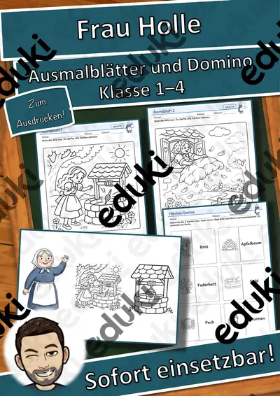
Märchen-Werkstatt: Frau Holle – Ausmalblätter und Domino, Klasse 1–4 (kostenlos)
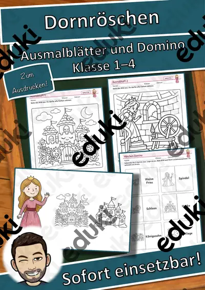
Märchen-Werkstatt: Dornröschen – Ausmalblätter und Domino, Klasse 1–4 (kostenlos)

Märchen-Werkstatt: Aschenputtel – Ausmalblätter und Domino, Klasse 1–4 (kostenlos)

Märchen-Werkstatt: Schneewittchen – Ausmalblätter und Domino, Klasse 1–4 (kostenlos)

Märchen-Werkstatt: Hänsel und Gretel – Ausmalblätter und Domino, Klasse 1–4 (kostenlos)

Märchen-Werkstatt: Rotkäppchen – Ausmalblätter und Domino, Klasse 1–4 (kostenlos)

Märchen-Werkstatt: Frau Holle – Plus-Paket mit Domino, Lesen und Kleben, Lesetext, Klasse 1–4

Märchen-Werkstatt: Dornröschen – Plus-Paket mit Domino, Lesen und Kleben, Lesetext, Klasse 1–4
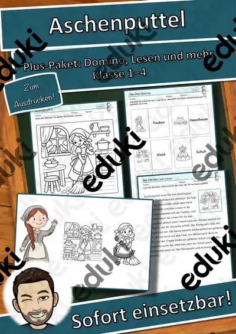
Märchen-Werkstatt: Aschenputtel – Plus-Paket mit Domino, Lesen und Kleben, Lesetext, Klasse 1–4
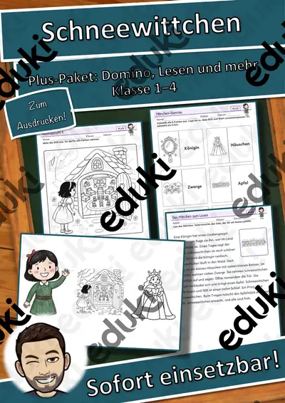
Märchen-Werkstatt: Schneewittchen – Plus-Paket mit Domino, Lesen und Kleben, Lesetext, Klasse 1–4
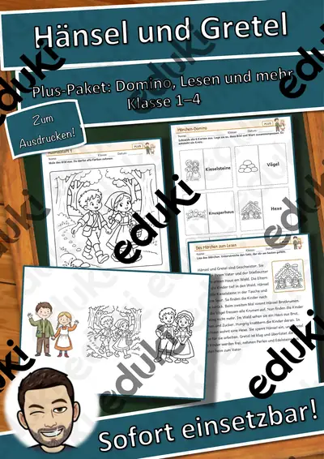
Märchen-Werkstatt: Hänsel und Gretel – Plus-Paket mit Domino, Lesen und Kleben, Lesetext, Klasse 1–4
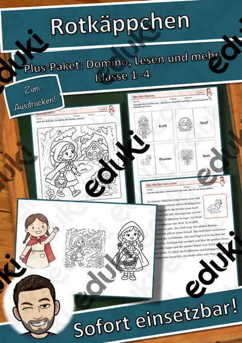
Märchen-Werkstatt: Rotkäppchen – Plus-Paket mit Domino, Lesen und Kleben, Lesetext, Klasse 1–4

Wichtelkärtchen: 24 Wichtelaufträge, Wichtelpost und Lose für die Klasse (Klasse 1–4)

Weihnachtsgeschichte als Domino: Religion in 2 Varianten mit Stichwörtern und Sätzen (Klasse 2–4)

Adventskalender-Vorlage für die Klasse: 24 Türchen, Ideenkarten und Plan (Klasse 1–4)

Winter-Rätselwerkstatt Materialpaket: Wer bin ich? + Krimi-Rätselheft + Logicals – 3 Rätselhefte in 3 Stufen (Klasse 1–4)

Logicals „Wer ist wer?“ im Winter: 11 Logikrätsel in 3 Stufen mit Kreuztabelle und Lösungen (Klasse 2–4)

Schreibwerkstatt Vorgangsbeschreibung – Gesamtpaket: alle 12 Einheiten in 3 Stufen (Klasse 3–5)

Schreibwerkstatt Vorgangsbeschreibung – Paket Alltag, Sport & Technik: 4 Einheiten in 3 Stufen (Klasse 3–5)

Schreibwerkstatt Vorgangsbeschreibung – Paket Basteln & Natur: 4 Einheiten in 3 Stufen (Klasse 3–5)

Schreibwerkstatt Vorgangsbeschreibung – Paket Küche & Experimente: 4 Einheiten in 3 Stufen (Klasse 3–5)

Schreibwerkstatt Vorgangsbeschreibung: Einen Text am Computer speichern – 3 Stufen & Kurztest (Klasse 3–5)

Schreibwerkstatt Vorgangsbeschreibung: Futterglocke für Vögel herstellen – 3 Stufen & Kurztest (Klasse 3–5)

Schreibwerkstatt Vorgangsbeschreibung: Seilspringen lernen – 3 Stufen & Kurztest (Klasse 3–5)

Schreibwerkstatt Vorgangsbeschreibung: Schuhe mit Schleife binden – 3 Stufen & Kurztest (Klasse 3–5)

Schreibwerkstatt Vorgangsbeschreibung: Hände richtig waschen – 3 Stufen & Kurztest (Klasse 3–5)

Schreibwerkstatt Vorgangsbeschreibung: Freundschaftsband flechten – 3 Stufen & Kurztest (Klasse 3–5)

Schreibwerkstatt Vorgangsbeschreibung: Kresse säen und ernten – 3 Stufen & Kurztest (Klasse 3–5)

Schreibwerkstatt Vorgangsbeschreibung: Papierflieger falten – 3 Stufen & Kurztest (Klasse 3–5)

Schreibwerkstatt Vorgangsbeschreibung: Tanzende Rosinen – 3 Stufen & Kurztest (Klasse 3–5)

Schreibwerkstatt Vorgangsbeschreibung: Knete selbst herstellen – 3 Stufen & Kurztest (Klasse 3–5)

Schreibwerkstatt Vorgangsbeschreibung: Obstsalat zubereiten – 3 Stufen & Kurztest (Klasse 3–5)

Lesewinter Materialpaket Klasse 2, 3 und 4: 30 Wintertexte in je 3 Stufen – tägliche Lesezeit, Lesefluss-Training, Hörfassung (einmal zahlen)

Lesewinter Klasse 4: 10 Wintertexte in 3 Stufen – tägliche Lesezeit, Lesefluss-Training, Tandem-Lesen, Hörfassung

Schreibwerkstatt Vorgangsbeschreibung: Pfannkuchen backen – 3 Stufen & Kurztest (Klasse 3–5)

Laufdiktat-Werkstatt Materialpaket: 3 Themenhefte Sachwissen – 45 Sätze × 3 Stufen, Lineaturen, Quiz, Hördiktate (Klasse 1–4)

Laufdiktat Unser Sonnensystem – 15 Sachsätze in 3 Stufen, 3 Lineaturen, Quiz, Hördiktat per QR (Klasse 3–4)

Lesekartei Advent – 32 Kinderfragen mit Antworten in 3 Stufen (Klasse 2–4)

Lesekartei St. Martin – 32 Kinderfragen mit Antworten in 3 Stufen (Klasse 2–4)

Stadt, Land, Winter – Wörterspiel mit Buchstaben-Drehscheibe, 3-fach differenziert (Deutsch Klasse 2–4)

Materialpaket - Papstwahl - Papstwechsel

Papstwechsel - Bekanntgabe und erster Auftritt

Materialpaket - Internationale Tage im April
Materialpaket - Internationale Tage im März

Materialpaket - Internationale Tage im Februar
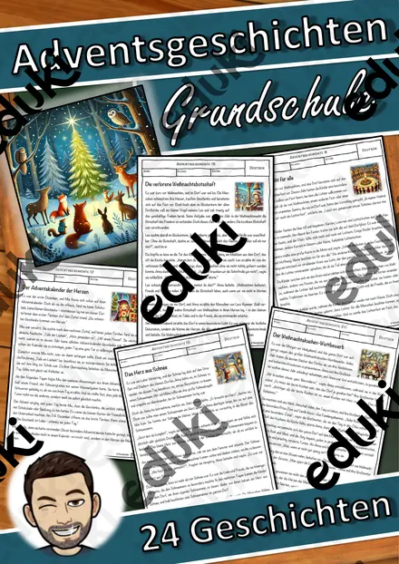
Adventsgeschichten - Grundschule - 24 Adventsgeschichten

Adjektive-Rechtschreibung Adjektive (auch Homeschooling)

Comic und Emotionen, Adjektive

Pommes - Adjektive steigern (auch Homeschooling) Rechtschreibung

Rechtschreibung Vorsilben
Keine Materialien gefunden – versuch einen anderen Suchbegriff oder Filter.